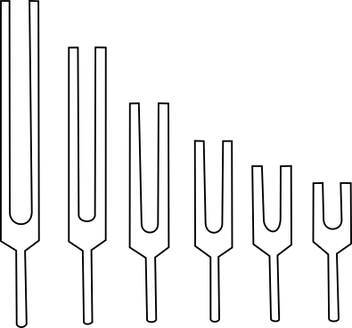
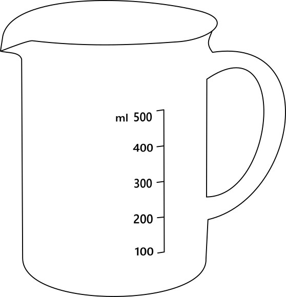
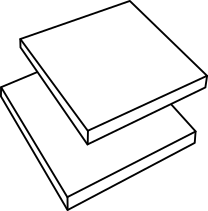
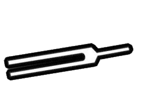
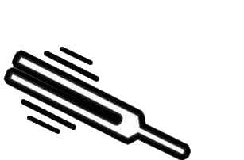
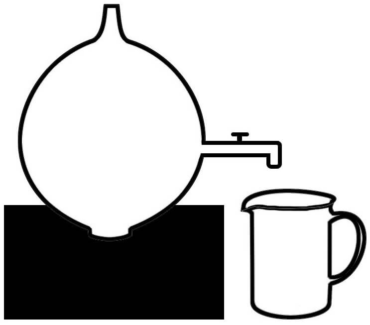

Objective
To verify the relation between the frequency n and the resonating volume
V and hence to find the
unknown frequency of the given tuning fork.
Resonator bottle, Set of tuning forks, Rubber pad, and Measuring jar.
Resonator bottle

Set of tuning forks

Measuring jar

Rubber pad



Added Successfully!
| Frequency (HZ) |
Volume Of Air Column (CC) |
Instructions
- Select "Frequency of tuning fork" using "Frequency of tuning
fork" slider.
- Click the "Fill Resonator" button to fill the resonator with water.
- Click the "Start" button to start the experiment by activating the tuning fork with rubber pads and letting water flow.
- Click on the "Add to Table" button to add the frequency and volume of air column values to the table.
- Click on the "Observation" button to view the table.
- Click on the "Plot Graph" button to plot the graph.
- Click on the "V/n^-2 GRAPH" button to view the garph
Copyright © SOLVE The Virtual Lab @ NITK Surathkal